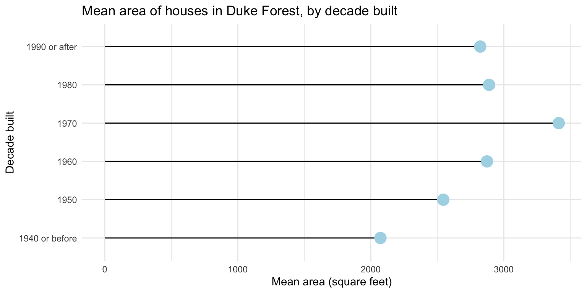
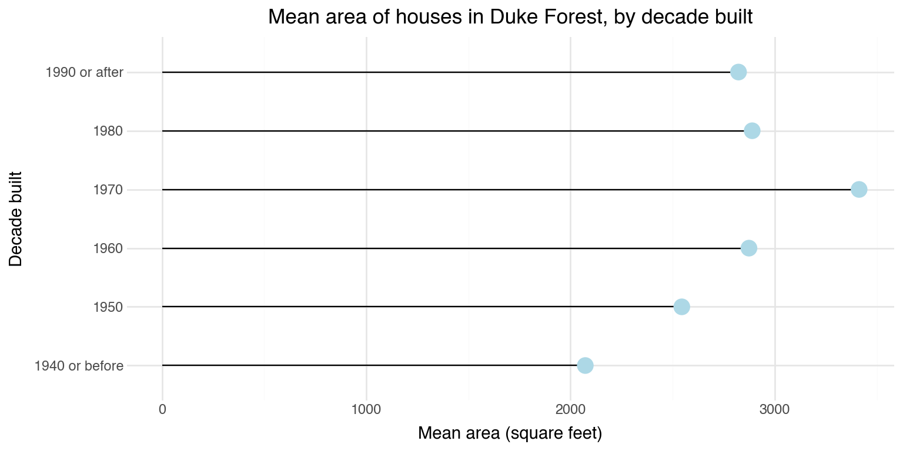
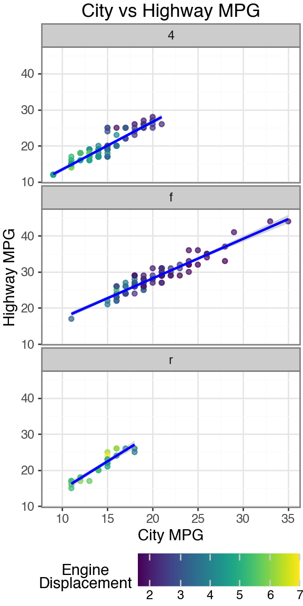

Data visualization with Python I
Lecture 22
Duke University
STA 313 - Spring 2026
Warm up
Announcements
Mini-project 2 due today at 5 pm
Project 2 peer evaluation 1 due Wednesday at 5 pm – no extensions as we’d like to share summaries before lab the next day
Project 2 presentation schedule: https://vizdata.org/projects/project-2.html#due-dates
Upcoming HW deadlines:
- HW 5 due Monday, April 20 at 5 pm
- HW 6 (optional) due Tuesday, April 28 at 5 pm
SSMU event: “Existential crisis! Is my degree worthless?” with Mr. Davis Vaughan
Join SSMU for a seminar featuring Davis Vaughan, a software engineer at Posit, as he asks the timely question: is YOUR degree worth it?! Davis works on Positron, a data science-focused IDE, as well as the R packages that make up the tidyverse. He will walk through examples of how he and his colleagues use Claude Code and other AI tools to amplify their own skills, rather than replace them.
🗓️ 4:30 PM-5:30 PM on Wednesday, April 8th
📍 Old Chem 116
From last time: Generative art resources
R packages:
More aRtists: rtistry art gallery by Ijeamaka Anyene
A whole course on Generative Art by Danielle Navarro: https://art-from-code.netlify.app
Setup
- R:
- Python:
Data visualization with Python
Spot the difference
Plot A:

Plot B:

Spot the difference
Plot A:

Plot B:

Overview
- Goal:
- Get a taste of data visualization with Python with
plotnine– a Python data visualization package based on the grammar of graphics and inspired byggplot2– and do so in Positron usinguvfor package management. - Not: A comprehensive introduction to Python or even to data visualization with Python.
- Not: Tips and tricks for working with Python outside of Positron.
- Get a taste of data visualization with Python with
- Approach:
- We will cover the basics of
plotnineand how to create different types of plots. - We will use
polarsto read in data from CSV files, but we will not cover how to prepare your data for visualization in Python.
- We will cover the basics of
But…
there are some Python details we can’t avoid…
Package management
in Python with uv
Python packaging landscape
Python’s packaging ecosystem has historically been fragmented:
- Multiple tools:
pip,virtualenv,venv,conda,poetry,pipenv, etc. - Multiple config files:
requirements.txt,setup.py,pyproject.toml, etc. - Version management often handled separately (
pyenv)
uv is a modern tool that aims to unify these concerns with a fast, Rust-based implementation.
What is uv?
uv is a Python package and project manager developed by Astral.
Key features:
- Extremely fast (10-100x faster than pip)
- Manages Python versions
- Creates and manages virtual environments
- Installs packages
- Handles project dependencies via
pyproject.toml - Drop-in replacement for
pipandvirtualenv - Directly supported by Positron and Reticulate
Installing uv
uv is already installed on the departmental servers, for local installs:
On MacOS/Linux:
or with homebrew:
or with pip / pipx
Verify installation
Once installed you should be able to run the following,
As long as you have something higher than 0.9.* you should be fine.
Managing Python versions
uv can install and manage multiple Python versions,
The pinned version is stored in ~/.python-version and will be used automatically.
Initializing a project
Use uv init to create a new project,
Initialized project `my-project`total 32
drwxr-xr-x 8 mine staff 256 Apr 6 00:22 .
drwx------@ 55 mine staff 1760 Apr 6 00:22 ..
drwxr-xr-x@ 9 mine staff 288 Apr 6 00:22 .git
-rw-r--r--@ 1 mine staff 109 Apr 6 00:22 .gitignore
-rw-r--r--@ 1 mine staff 5 Apr 6 00:22 .python-version
-rw-r--r--@ 1 mine staff 88 Apr 6 00:22 main.py
-rw-r--r--@ 1 mine staff 156 Apr 6 00:22 pyproject.toml
-rw-r--r--@ 1 mine staff 0 Apr 6 00:22 README.mdThis creates a pyproject.toml, a sample main.py script, and basic git infrastructure. Generally, we only really care about the pyproject.toml which we can exclusively generate via uv init --bare.
pyproject.toml
Modern project metadata file, tracks python version and package dependencies among other details.
Adding dependencies
Once we have our project setup we can add (and install) dependencies directly via uv. uv add updates pyproject.toml and installs the package (creating a venv if needed).
Using CPython 3.14.3
Creating virtual environment at: .venv
Resolved 19 packages in 188ms
Installed 17 packages in 134ms
+ contourpy==1.3.3
+ cycler==0.12.1
+ fonttools==4.62.1
+ kiwisolver==1.5.0
+ matplotlib==3.10.8
+ mizani==0.14.4
+ numpy==2.4.4
+ packaging==26.0
+ pandas==3.0.2
+ patsy==1.0.2
+ pillow==12.2.0
+ plotnine==0.15.3
+ pyparsing==3.3.2
+ python-dateutil==2.9.0.post0
+ scipy==1.17.1
+ six==1.17.0
+ statsmodels==0.14.6Updated pyproject.toml
Virtual environments
Virtual environments isolate project dependencies from the system Python and other projects. Packages are installed in a local folder in your project.
As we just saw, using uv add will create a new virtual environment in .venv by default if there is not an existing venv.
Activating environments in Positron with uv
Positron automatically detects virtual environments in your project directory. When you open a folder containing a .venv directory (created by uv), Positron will:
- Detect the environment and offer to use it
- Show the active Python interpreter in the status bar
- Use the environment for the Python console and when running scripts
If not automatically detected, you can manually select the interpreter via the Command Palette (Cmd+Shift+P / Ctrl+Shift+P) and searching for “Python: Select Interpreter”.
uv sync
Since the .venv folder is system specific (and large) it is not typically committed to git. Instead you will likely clone a repository that just has a pyproject.toml file.
Use uv sync to construct the venv and install all dependencies for the project.
Common workflows
New project setup:
Let’s give it a try!
Go to ae-16 and let’s make a simple plot with plotnine!
For now, ae-16-Python.qmd only.
Introduction to plotnine
What is plotnine?
plotnine is a Python visualization library that implements the grammar of graphics.
- Based on the same principles as ggplot2 in R
- Enables data visualization through composable, layered components
- Maps data to visual properties systematically
- Works with Pandas and Polars DataFrames
The grammar of graphics
A plot is built from layers of components:
| Component | Description |
|---|---|
| Data | The dataset to visualize |
| Aesthetics | Mappings from data to visual properties |
| Geoms | Geometric objects that represent data |
| Scales | Control how data values map to visual values |
| Facets | Split data into multiple subplots |
| Coords | Coordinate system for the plot |
| Themes | Control non-data visual elements |
Data
All plots begin with passing data to ggplot():
Tip
Plotnine works best with tidy data:
- Each variable is a column
- Each observation is a row
- Each type of observational unit is a table
Aesthetic mappings
The aes() function maps data columns to visual properties:
Common aesthetic mappings:
| Aesthetic | Description |
|---|---|
x, y |
Position on axes |
color |
Color of points/lines |
fill |
Fill color of shapes |
size |
Size of points |
shape |
Shape of points |
alpha |
Transparency |
Geometric objects (geoms)
Note
In Python, wrap the entire plot expression in parentheses () to allow line breaks.
Geometric objects (geoms)
Geoms determine how data is visually represented:
| Geom | Description |
|---|---|
geom_point() |
Scatter plot |
geom_line() |
Line plot |
geom_bar() |
Bar chart |
geom_histogram() |
Histogram |
geom_boxplot() |
Box plot |
geom_smooth() |
Smoothed line |
geom_text() |
Text labels |
geom_segment() |
Line segments |
geom_area() |
Area plot |
geom_density() |
Density plot |
Layering with +
Components are combined using the + operator:
Note
In Python, move the + to the start of the line and add a line break before +.
Scales
Scales customize how data values map to visual values.
Naming pattern: scale_<aesthetic>_<type>
Common scale functions:
scale_x_continuous(),scale_y_continuous()- continuous axesscale_x_log10(),scale_y_log10()- log-transformed axesscale_color_manual(),scale_fill_manual()- custom colorsscale_color_brewer(),scale_fill_brewer()- ColorBrewer palettes
Facets
Facets split data into multiple subplots:
Coordinate systems
Coordinate functions specify the plot’s coordinate system:
Themes
Themes control non-data visual elements like fonts, colors, and grid lines.
Pre-built themes:
Labels
Use labs() to add titles and axis labels:
Putting it all together
from plotnine import *
from plotnine.data import mpg
(
ggplot(mpg, aes(x="cty", y="hwy"))
+ geom_point(aes(color="displ"), alpha=0.7)
+ geom_smooth(method="lm", color="blue")
+ scale_color_continuous(cmap_name="viridis")
+ facet_wrap("~drv", ncol=1)
+ labs(
title="City vs Highway MPG",
x="City MPG",
y="Highway MPG",
color="Engine\nDisplacement"
)
+ theme_bw()
+ theme(
figure_size=(3, 6),
legend_position="bottom"
)
)
Key differences from ggplot2
| ggplot2 (R) | plotnine (Python) |
|---|---|
aes(x = var) |
aes(x="var") (quoted strings) |
+ at end of line |
+ at start of line (inside parens) |
theme(legend.position = ...) |
theme(legend_position=...) (underscores) |
| No parens needed | Wrap in () for multi-line plots |
ggsave() |
.save() method on plot object |
Back to ae-16
Go to ae-16 and work on ae-16-R-and-Python.qmd.